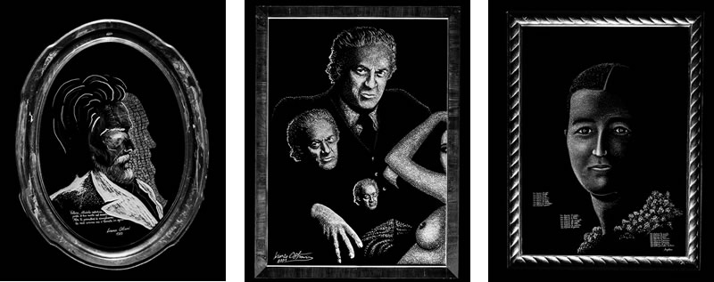

«Perché fondare un Istituto del Simbolo?
Perché il Simbolo è la struttura più profonda e universale della mente umana, nonché della storia spirituale e culturale dei popoli. Considerare il Simbolo significa lavorare sulle radici dell'uomo, della sua cultura e di tutta la sua vicenda storica planetaria.
L'Istituto dei Simboli Universali (I.S.U.) risulterà unico nel mondo. In nessun continente della terra esiste un'istituzione cosiffatta, capace di annoverare, mostrare e studiare i fondamentali Simboli della specie umana e della sua diramata storia multimillenaria.
Recuperare, comparare e illuminare i Simboli significa far luce sul centro della Coscienza Umana e della Vita, attraverso tutti gli insegnamenti filosofici, scientifici, artistici, letterari, culturali, sociali e religiosi dei tanti popoli della terra. Sappiamo bene che i Simboli sono alla base di tutte le conoscenze umane. Letterature, arti, filosofie, scienze della natura e scienze dell'uomo, terapie, religioni, lingue e tradizioni, tutte hanno una base simbolica, tutte poggiano su un alfabeto simbolico.
La musica come la matematica, ad esempio, la poesia come la chimica, l'etica come la fisica, l'architettura come la cosmologia sono, al pari di tutte le grandi costruzioni umane, basate su fondamenti simbolici. Il Simbolo è la fondazione, la massima energia nella minima forma, la riconoscibile essenza di tutto ciò che esiste ed è oggetto di pensiero.
Il simbolo è il quantum di Luce che attraversa ogni concezione teorica e ogni attività pratica. E in definitiva rappresenta l'abbattimento dei confini dentro la persona e fra gli uomini, dentro ogni cultura e fra le culture. Ritrovarlo dunque significa ritrovare la pianta-madre dell'umanità riconoscibile in tutte le tradizioni e in ogni essere umano». Lorenzo Ostuni

Il Museo vivo dei Simboli
Lorenzo Ostuni simbologo e creatore di metodologie simboliche di fama internazionale, ha realizzato in 50 anni un Museo dei Simboli di portata unica, costituito di oltre 10.000 pezzi (Simboli) relativi alle culture di tutto il pianeta e di tutte le epoche.
Tutta la collezione museale è organizzata in insiemi ragionati e coerenti per significati ed epoche. Tali insiemi sono stati denominati Sistemi Simbolici.
Il Museo Vivo dei Simboli contiene, fra gli altri, 2.500 pietre lavorate, incise o dipinte con Simboli originari di tutti i continenti della terra e riferiti a periodi molto diversi tra loro. Questa raccolta di petroglifi, unica nel suo genere per estensione e qualità, rappresenta la storia planetaria dell’inconscio umano. Alcune centinaia di Simboli di varia grandezza (da 1 metro e mezzo a 20 e 30 cm.) sono in ferro battuto. Costituiscono una raccolta-albero di particolare estensione mondiale e di speciale intensività culturale. Circa 100 specchi artistici incisi con raffinata tecnica al diamante, pezzi unici al mondo, raffigurano in ampia sintesi i momenti fondamentali della simbolica alchemica e metafisica d’oriente e d’occidente.
Si aggiungono a quest’elenco migliaia di opere pittoriche e grafiche organizzate in insiemi coerenti e secondo soluzioni organiche d’ordine storico e sincronico. Alcune migliaia di testi letterari, filosofici, estetici di impostazione simbolica costituiscono il settore “scritti” del Museo. Completano l’archivio dell’Istituto:
- un amplissimo materiale audio e video che dà testimonianza dell’intero svolgersi delle ricerche effettuate da Lorenzo Ostuni;
- manoscritti e appunti, editi e inediti, di carattere filosofico, psicologico, antropologico relativi alle sue attività di scrittore, poeta, drammaturgo, sceneggiatore e soggettista cinematografico e televisivo.
Ricerca e formazione
Particolare attenzione verrà data dall'Istituto alle attività di Ricerca. Esse saranno finalizzate allo studio del materiale esposto e conservato nell'Istituto del Simbolo e nell'archivio Lorenzo Ostuni, sotto ciascuno degli aspetti rilevanti: antropologico, psicologico, filosofico, artistico, storico religioso, drammaturgico, cinematografico. L'istituto svilupperà al riguardo attività di residenza studio e concederà borse di studio per ricerche in corso e premi per tesi di laurea o dottorato.
Inoltre, è interesse dell'Istituto promuovere una formazione artistica e professionale in alcuni degli ambiti di ricerca sviluppati da Lorenzo Ostuni, ad esempio:
Scuola di incisione artistica di specchi, vetri e marmi pregiati.
Fra le attività applicative a impatto territoriale e con risonanza internazionale, si prevede l'istituzione di una scuola di incisione artistica di specchi, vetri e marmi pregiati. Si tratta di una tecnica creata da Lorenzo Ostuni in oltre trent'anni anni di impegno operativo e concettuale a Roma e in California, che prevede l'uso del diamante come strumento incisorio prevalente. Tale scuola a tutt'oggi sarebbe l'unica del genere nel mondo.
Scuola di Mirror Therapy e Mirror Experiences.
La scuola formerà delle guide al benessere, dei personal trainers per il raggiungimento e il mantenimento dell'equilibrio psicofisico delle persone. La tecnica consiste nell'uso di specchi recanti speciali simboli incisi e luce solare. L'interazione sole-specchio-simbolo – una forma di elioterapia - eroga una triplice forma di energia rilassante e decondizionante idonea ad essere applicata nei Centri Benessere ormai cosi diffusi.
Scuola di Biodramma.
La scuola produrrà degli operatori (biodrammatisti e analisti) capaci di applicare il Biodramma. Il Biodramma è una tecnica della coscienza di sé basata sulla drammatizzazione corporea, approntata da Lorenzo Ostuni nel suo Centro Studi Simbologici di Roma. La metodologia ha avuto un grande successo presso il celebre Esalen Institute di Big Sur in California. Fra Stati Uniti ed Europa il Biodramma è stato applicato, in 30 anni, ad alcune migliaia di persone.